library(tidyverse)
library(broom)Simple Linear Regression
Learning Objectives
- Describe the simple linear regression model and interpret its parameters.
- Estimate regression coefficients using ordinary least squares (OLS).
- Conduct inference (tests and confidence intervals) for \(\beta_0\) and \(\beta_1\).
- Distinguish between pointwise confidence intervals, simultaneous confidence bands, and prediction intervals.
- Recognize the dangers of extrapolation.
- Interpret the sample correlation and \(R^2\) as measures of linear association.
Case Study: The Big Bang and the Age of the Universe
According to Big Bang theory, the distance \(Y\) between any two celestial objects and their recession velocity \(X\) (the speed at which they are moving apart) are related by the age of the universe \(T\): \[Y = TX.\]
Edwin Hubble measured recession velocities and distances for 24 nebulae beyond the Milky Way. If the Big Bang model is correct, the slope of a regression of Distance on Velocity estimates the age of the universe, and the intercept should be zero.
case0701 <- read_csv("https://dcgerard.github.io/stat_302/data/case0701.csv")
ggplot(case0701, aes(x = Velocity, y = Distance)) +
geom_point() +
labs(x = "Recession velocity (km/s)",
y = "Distance (megaparsecs)")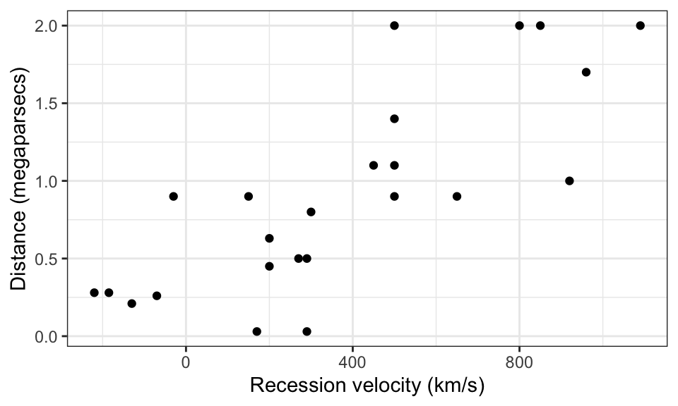
Questions of interest:
- Is the intercept zero, as Big Bang theory requires?
- What is the estimated age of the universe?
Review: Lines
Every straight line has the equation \[Y = \beta_0 + \beta_1 X,\] where \(\beta_1\) is the slope (rise over run) and \(\beta_0\) is the \(y\)-intercept (the value of the line at \(X = 0\)).
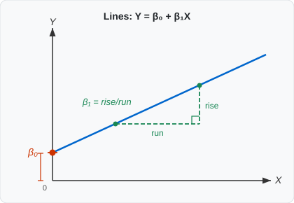
The Simple Linear Regression Model
Model
\[Y_i = \beta_0 + \beta_1 X_i + \varepsilon_i\]
- \(Y_i\): response for observation \(i\) (distance of nebula \(i\) from Earth)
- \(X_i\): explanatory variable for observation \(i\) (recession velocity of nebula \(i\))
- \(\beta_0\): intercept of the mean line — the mean response when \(X = 0\)
- \(\beta_1\): slope — the mean difference in \(Y\) per one-unit difference in \(X\)
- \(\beta_0 + \beta_1 X_i\): the conditional mean of \(Y\) at \(X = X_i\)
- \(\varepsilon_i\): individual noise, mean 0, variance \(\sigma^2\), ideally normally distributed
Conditional Distributions
The key assumptions are:
- The mean of \(Y\) is a linear function of \(X\): \(E(Y \mid X) = \beta_0 + \beta_1 X\).
- The variance of \(Y\) is the same for every value of \(X\) (constant \(\sigma^2\)).
- Individual observations are independent.
- Ideally, \(Y \mid X\) is normally distributed.
The animation below illustrates assumptions 1 and 2: at each fixed velocity \(x_0\), the distance values are normally distributed around the fitted line, and the spread \(\sigma\) is the same at every \(x_0\).
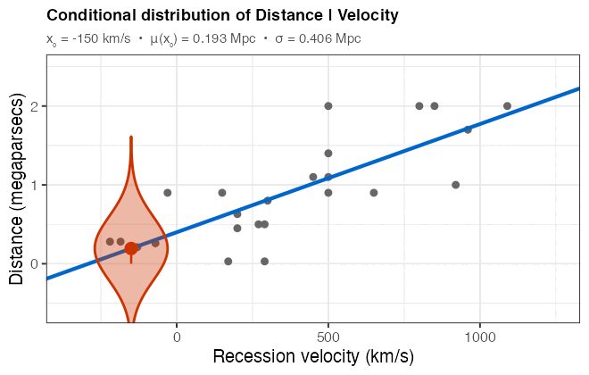
Estimating \(\beta_0\) and \(\beta_1\): Ordinary Least Squares
The OLS Criterion
We choose \(\hat\beta_0\) and \(\hat\beta_1\) to minimize the sum of squared residuals:
\[\text{RSS} = \sum_{i=1}^{n} \hat\varepsilon_i^2 = \sum_{i=1}^{n} \bigl(Y_i - \hat\beta_0 - \hat\beta_1 X_i\bigr)^2.\]
The resulting estimates are called the ordinary least squares (OLS) estimates.
Visualizing OLS
Three candidate lines are shown below. The vertical segments are the residuals. The OLS line has the smallest total squared length.
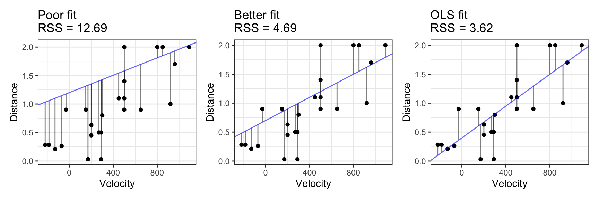
Closed-Form Solutions
Using calculus one can show that the OLS estimates are:
\[\hat\beta_1 = \frac{s_Y}{s_X}\, r_{XY}, \qquad \hat\beta_0 = \bar Y - \hat\beta_1 \bar X,\]
where \(s_X\), \(s_Y\) are the sample standard deviations and \(r_{XY}\) is the sample correlation.
Estimating \(\sigma^2\)
The residuals \(\hat\varepsilon_i = Y_i - \hat\beta_0 - \hat\beta_1 X_i\) measure leftover variability. The estimated variance is:
\[\hat\sigma^2 = \frac{\sum_{i=1}^n \hat\varepsilon_i^2}{n - 2} = \frac{\text{RSS}}{n - 2}.\]
We divide by \(n - 2\) because two parameters (\(\beta_0\) and \(\beta_1\)) are estimated — leaving \(\nu = n - 2\) degrees of freedom.
Implementation in R
Use lm() (linear model) to fit the regression:
lmout <- lm(Distance ~ Velocity, data = case0701)coef() returns \(\hat\beta_0\) and \(\hat\beta_1\); sigma() returns \(\hat\sigma\):
coef(lmout)(Intercept) Velocity
0.399170440 0.001372408 sigma(lmout)[1] 0.4056302Plot the fitted line with geom_smooth(method = "lm"):
ggplot(case0701, aes(x = Velocity, y = Distance)) +
geom_point() +
geom_smooth(method = "lm", se = FALSE) +
labs(x = "Recession velocity (km/s)", y = "Distance (megaparsecs)")`geom_smooth()` using formula = 'y ~ x'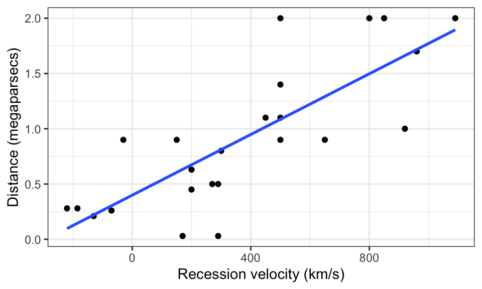
Inference for Regression Coefficients
Sampling Distributions
Because \(\hat\beta_0\) and \(\hat\beta_1\) depend on the random sample, they have sampling distributions. If we repeatedly drew new samples (keeping the \(X_i\) values fixed) and re-estimated, the resulting estimates would vary.
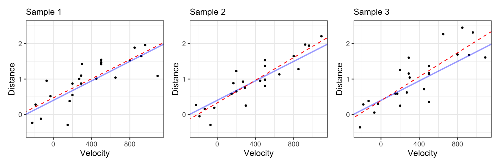
Blue = true regression line; dashed red = estimated line from that simulated sample. The slope shifts across samples, but centers on the true \(\beta_1\).
The histograms below confirm that the sampling distributions of \(\hat\beta_0\) and \(\hat\beta_1\) are (approximately) normal:
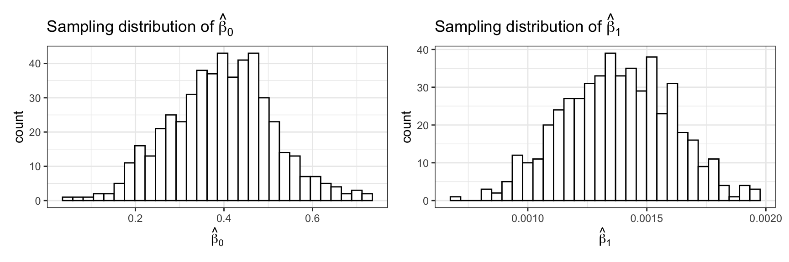
Theoretical Standard Errors
A CLT argument shows that for large \(n\):
\[\hat\beta_1 \sim N\!\left(\beta_1,\; SE(\hat\beta_1)\right), \qquad SE(\hat\beta_1) = \hat\sigma \sqrt{\frac{1}{(n-1)s_X^2}}\]
\[\hat\beta_0 \sim N\!\left(\beta_0,\; SE(\hat\beta_0)\right), \qquad SE(\hat\beta_0) = \hat\sigma \sqrt{\frac{1}{n} + \frac{\bar X^2}{(n-1)s_X^2}}\]
\(t\)-Tests
Replacing \(\hat\sigma\) for \(\sigma\) introduces extra variability, so the standardized estimates follow a \(t\) distribution:
\[t^* = \frac{\hat\beta_1 - \beta_1}{SE(\hat\beta_1)} \sim t_{n-2}, \qquad t^* = \frac{\hat\beta_0 - \beta_0}{SE(\hat\beta_0)} \sim t_{n-2}.\]
To test \(H_0 : \beta_1 = 0\) (no linear association), compute \(t^* = \hat\beta_1 / SE(\hat\beta_1)\) and find the two-sided \(p\)-value \(2 P(t_{n-2} \leq -|t^*|)\).
Confidence Intervals
A 95% confidence interval for \(\beta_1\):
\[\hat\beta_1 \pm t_{n-2}(0.975) \cdot SE(\hat\beta_1).\]
Obtaining Results in R
tidy() from the broom package returns estimates, SEs, \(t\)-statistics, and \(p\)-values as a tidy data frame:
tidy(lmout)# A tibble: 2 × 5
term estimate std.error statistic p.value
<chr> <dbl> <dbl> <dbl> <dbl>
1 (Intercept) 0.399 0.119 3.36 0.00280
2 Velocity 0.00137 0.000228 6.02 0.00000461tidy() with conf.int = TRUE appends 95% confidence intervals:
tidy(lmout, conf.int = TRUE)# A tibble: 2 × 7
term estimate std.error statistic p.value conf.low conf.high
<chr> <dbl> <dbl> <dbl> <dbl> <dbl> <dbl>
1 (Intercept) 0.399 0.119 3.36 0.00280 0.153 0.645
2 Velocity 0.00137 0.000228 6.02 0.00000461 0.000900 0.00184Interpretation
Randomized experiment: A one-unit increase in \(X\) causes a \(\hat\beta_1\) unit change in the mean of \(Y\).
Observational study: Populations that differ by one unit in \(X\) differ by \(\hat\beta_1\) units in \(Y\) on average.
For the nebula data (observational): nebulae with a recession velocity 1 km/s faster tend to be about 0.0014 megaparsecs farther from Earth (\(p < 0.001\), 95% CI: 0.00090 to 0.0018).
Interval Estimates at a Given \(X_0\)
Pointwise Confidence Intervals
A pointwise confidence interval at \(X_0\) estimates the mean response \(\beta_0 + \beta_1 X_0\):
\[\hat\beta_0 + \hat\beta_1 X_0 \;\pm\; t_{n-2}(0.975) \cdot SE\!\left(\hat\beta_0 + \hat\beta_1 X_0\right),\]
where
\[SE\!\left(\hat\beta_0 + \hat\beta_1 X_0\right) = \hat\sigma \sqrt{\frac{1}{n} + \frac{(X_0 - \bar X)^2}{(n-1)s_X^2}}.\]
In R, use predict() with interval = "confidence":
predict(lmout, newdata = data.frame(Velocity = 100),
interval = "confidence") fit lwr upr
1 0.5364112 0.3216131 0.7512093geom_smooth(method = "lm") draws these pointwise intervals as a shaded band:
ggplot(case0701, aes(x = Velocity, y = Distance)) +
geom_point() +
geom_smooth(method = "lm", formula = y ~ x) +
labs(x = "Recession velocity (km/s)", y = "Distance (megaparsecs)")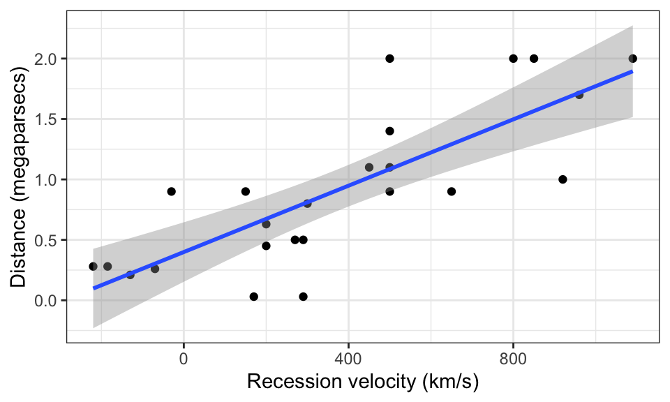
Simultaneous Confidence Bands
A simultaneous confidence band captures the entire regression line at once with 95% confidence:
\[\hat\beta_0 + \hat\beta_1 X_0 \;\pm\; \sqrt{2 F_{2,\,n-2}(0.95)} \cdot SE\!\left(\hat\beta_0 + \hat\beta_1 X_0\right).\]
The wider multiplier \(\sqrt{2 F_{2,n-2}(0.95)}\) replaces \(t_{n-2}(0.975)\) to account for all values of \(X_0\) simultaneously.
Note
geom_smooth() draws pointwise intervals, not simultaneous bands. For simultaneous bands, a third-party package such as investr is needed.
Prediction Intervals
A prediction interval gives likely values for a future observation at \(X_0\), not just the mean:
\[\hat\beta_0 + \hat\beta_1 X_0 \;\pm\; t_{n-2}(0.975) \sqrt{\hat\sigma^2 + SE\!\left(\hat\beta_0 + \hat\beta_1 X_0\right)^2}.\]
The extra \(\hat\sigma^2\) term accounts for individual variation around the mean. Prediction intervals are always wider than confidence intervals.
WarningPrediction intervals are sensitive to non-normality
Confidence intervals for the mean are protected by the central limit theorem. Prediction intervals, which try to capture a single future observation, are not — they rely directly on the normality assumption.
predict(lmout, newdata = data.frame(Velocity = 100),
interval = "prediction") fit lwr upr
1 0.5364112 -0.3318046 1.404627Comparing the Three Interval Types
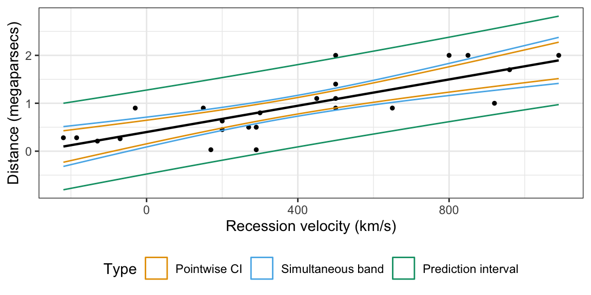
The prediction interval is widest; the pointwise confidence interval is narrowest; and the simultaneous band falls between.
Extrapolation vs. Interpolation
Interpolation means making estimates within the range of the observed \(X\) values. Extrapolation means predicting outside that range. Extrapolation is unreliable because:
- The linear relationship may not hold beyond the observed range.
- The variability may be different beyond the observed range.
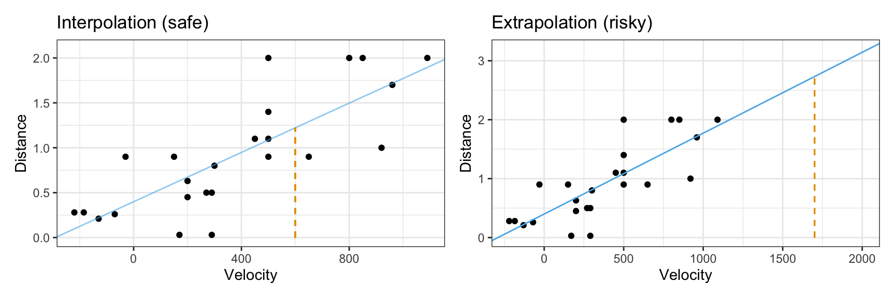
Correlation
The sample correlation measures the strength and direction of the linear association between \(X\) and \(Y\):
\[r_{XY} = \frac{1}{n-1} \sum_{i=1}^n \frac{(X_i - \bar X)(Y_i - \bar Y)}{s_X s_Y}.\]
Properties:
- Always between \(-1\) and \(1\).
- \(r = 0\) means no linear association (but could be non-linear!).
- \(|r| = 1\) if and only if all points lie exactly on a straight line.
- No units.
WarningAlways plot your data
Correlation measures only linear association. Very different datasets can share the same correlation. The Anscombe quartet below all have \(r \approx 0.82\):
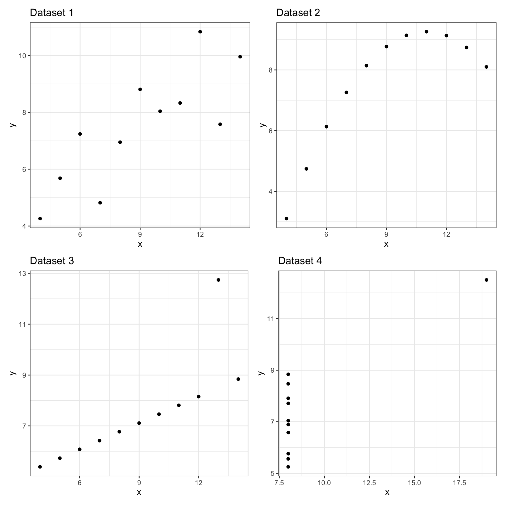
In R, cor() computes the sample correlation:
cor(case0701$Velocity, case0701$Distance)[1] 0.789032- Guess the correlation: https://www.guessthecorrelation.com/
\(R^2\)
\(R^2\) (the coefficient of determination) measures the proportion of variation in \(Y\) explained by the regression line:
\[R^2 = \frac{\text{Total SS} - \text{Residual SS}}{\text{Total SS}} = \frac{\text{Regression SS}}{\text{Total SS}}.\]
The three components are shown below:
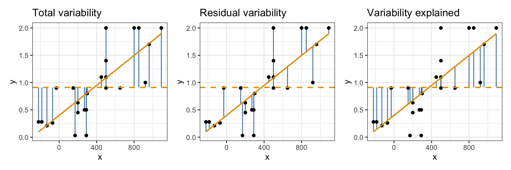
Properties of \(R^2\):
- Close to 0: weak linear relationship.
- Close to 1: strong linear relationship.
- \(R^2 = r_{XY}^2\) — the square of the sample correlation.
- Context-dependent benchmarks: \(R^2 > 0.99\) is typical in physics; \(R^2 \approx 0.25\)–\(0.5\) is considered good in social science.
glance() from broom returns model-level statistics including \(R^2\):
glance(lmout)# A tibble: 1 × 12
r.squared adj.r.squared sigma statistic p.value df logLik AIC BIC
<dbl> <dbl> <dbl> <dbl> <dbl> <dbl> <dbl> <dbl> <dbl>
1 0.623 0.605 0.406 36.3 0.00000461 1 -11.4 28.7 32.2
# ℹ 3 more variables: deviance <dbl>, df.residual <int>, nobs <int>
Warning\(R^2\) cannot diagnose model adequacy
Like correlation, \(R^2\) measures only linear association. A high \(R^2\) does not mean the linear model is appropriate (see the Anscombe quartet above). Always examine residual plots.
Back to the Big Bang
Is the Intercept Zero?
The Big Bang model requires \(\beta_0 = 0\). tidy() gives the test directly:
tidy(lmout)# A tibble: 2 × 5
term estimate std.error statistic p.value
<chr> <dbl> <dbl> <dbl> <dbl>
1 (Intercept) 0.399 0.119 3.36 0.00280
2 Velocity 0.00137 0.000228 6.02 0.00000461The \(p\)-value for \(H_0 : \beta_0 = 0\) is well below 0.05, so we reject the hypothesis that the intercept is zero. The nebula data are inconsistent with the simple \(Y = TX\) Big Bang model (or there is systematic measurement error).
Estimating the Age of the Universe
If we nonetheless assume the Big Bang model and force \(\beta_0 = 0\), we fit a line through the origin with - 1:
lm_noint <- lm(Distance ~ Velocity - 1, data = case0701)
tidy(lm_noint, conf.int = TRUE)# A tibble: 1 × 7
term estimate std.error statistic p.value conf.low conf.high
<chr> <dbl> <dbl> <dbl> <dbl> <dbl> <dbl>
1 Velocity 0.00192 0.000191 10.0 7.05e-10 0.00153 0.00232The estimated age is approximately 0.00192 megaparsec-seconds per km (95% CI: 0.00153 to 0.00232). Converting to years gives an estimate of roughly 1.9 billion years — far too young by modern standards (the universe is approximately 13.8 billion years old), reflecting the limited accuracy of Hubble’s early distance measurements.